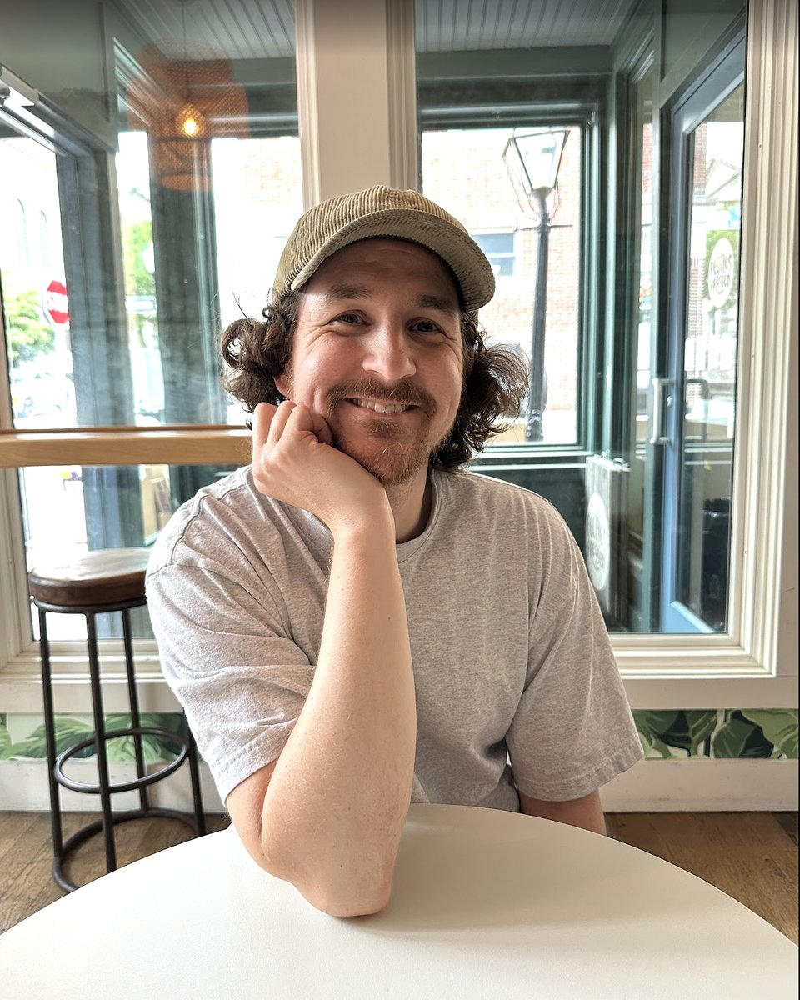
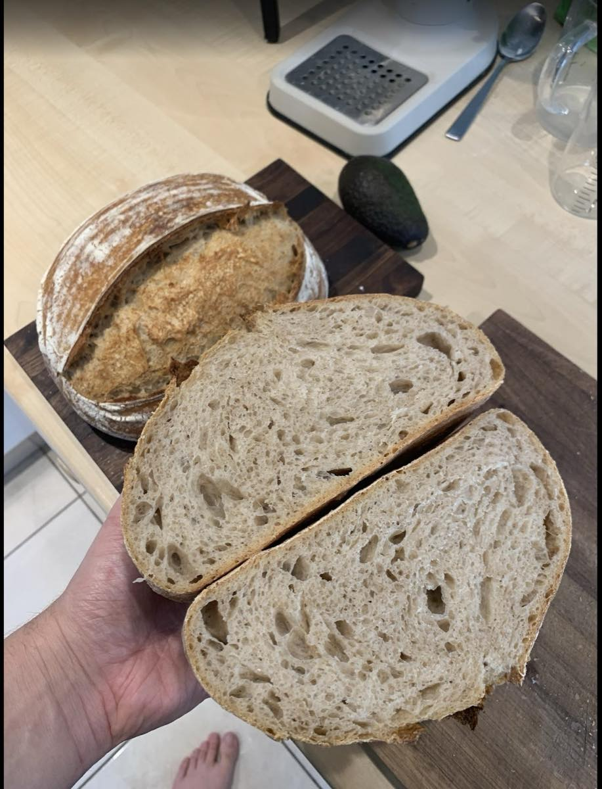
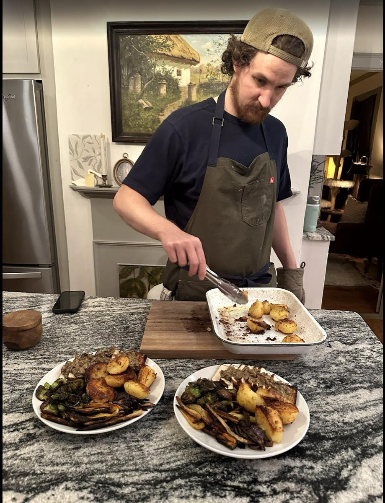
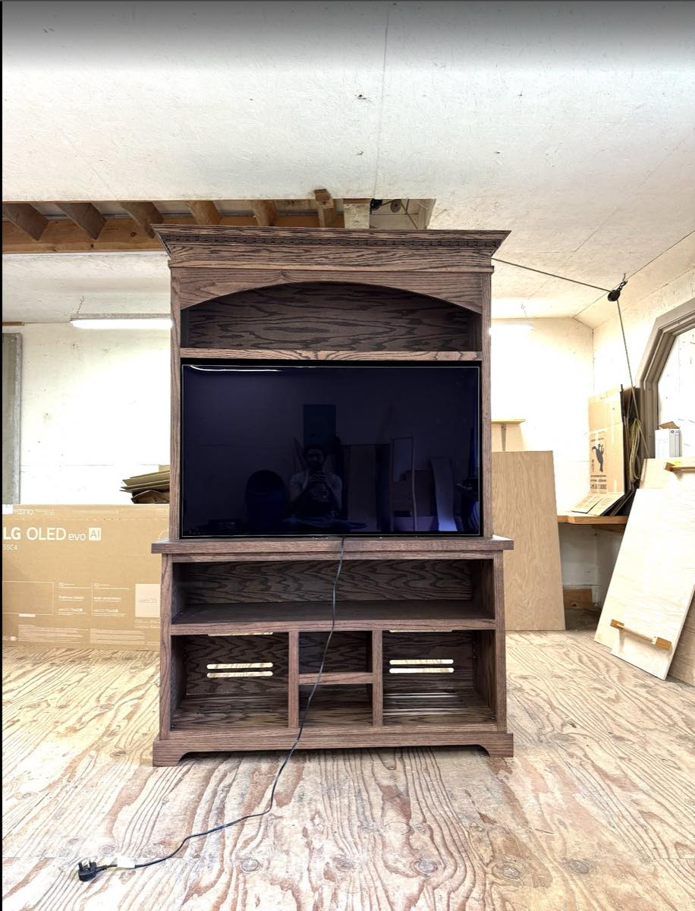
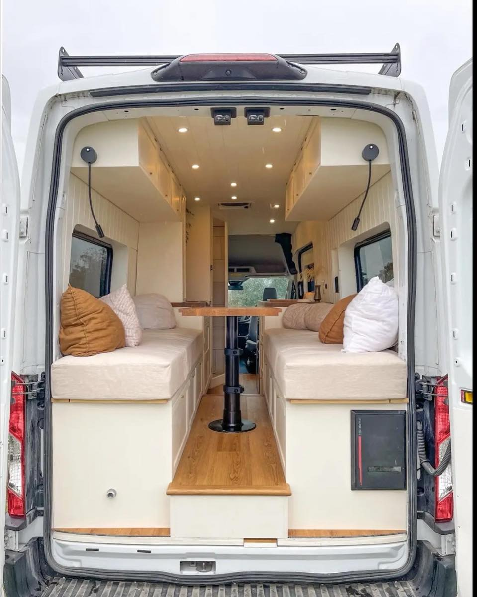
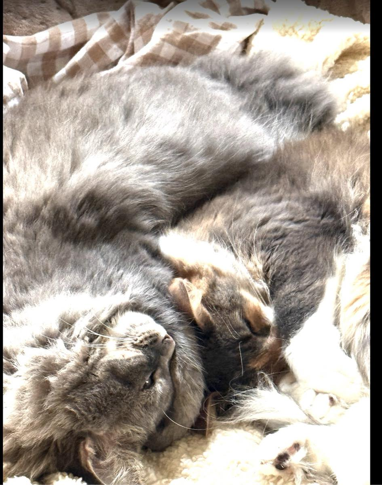
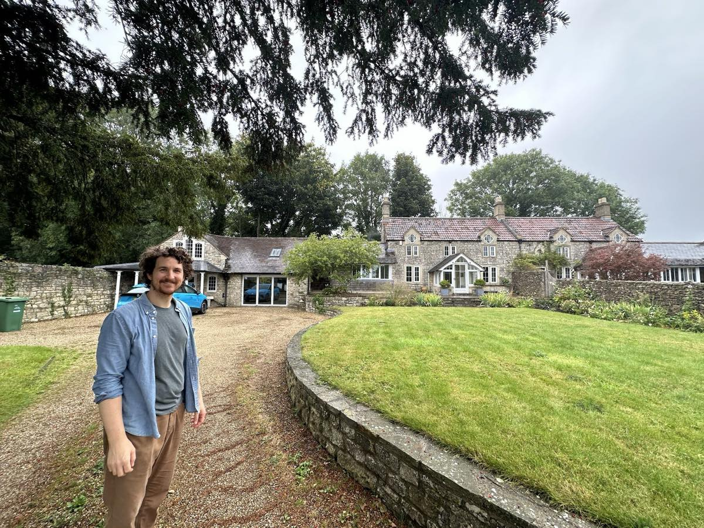

About
I'm Jason, a senior product designer with 14 years of experience.
I believe software should help people get their work done, however complicated the problem underneath and however technical they are.
That belief has taken me through a lot of industries. At HubSpot, I designed automation and AI agents that take repetitive work off small business teams, and before that spent five years on advertising tools for marketers. At Kyruus, I improved how patients get matched with the right doctor, on consumer websites and through call centers. At HP I worked on cloud automation software, and at XPO I designed internal tools for a logistics company.
Every new industry meant learning how someone else's work actually happens, and the fastest way I've found to do that is to talk to the people doing it.

What I believe in
Make the complicated feel simple
I believe the best answer is usually the simplest one that works well, so I keep asking what we can take away until only what people need is left. A marketer shouldn't have to think like an engineer to set up a workflow, and a shop owner shouldn't need a manual to use the software that runs their business.
Care about the craft
I care about how a product looks and feels as much as how it works. I spend real time on visual and interaction details, and on the parts that are easy to skip, like what a screen looks like before there's any data and what happens when something goes wrong. Those moments can decide whether someone trusts the product.
Let customers lead the way
I lean on customers to help guide where a design goes, so I talk to them throughout a project, from early interviews, card sorts and tree tests to concept and usability tests. After launch, I watch the data to see whether we got it right.
Build to learn
I use AI tools like Claude and Lovable to turn early ideas into working prototypes. They give me something real to work through with customers, and help me answer technical questions with engineers sooner. The tools help me move faster, and my own design judgment still decides what we ship.
Design for the teams who build on it
Some of my favorite work has been designing patterns other teams can build on, and working with those teams to keep the experience consistent wherever it shows up.
Help each other get better
I make a point of giving thoughtful, specific feedback to every designer I work with in team critiques, and I welcome the same in return.
Experience
- HubSpotSenior Product DesignerAutomation and AI agents2022 – 2026
- HubSpotProduct DesignerAdvertising2017 – 2022
- KyruusLead Product Designer, Product DesignerHealthcare provider matching2015 – 2017
- Hewlett PackardUX/UI DesignerCloud automation software
- XPO LogisticsUX EngineerInternal logistics tools
Outside of work
When I'm not designing, I'm usually making something, whether that's sourdough, a vegan dinner or a piece of furniture. I also converted a van into a camper. I used to live in England, I travel whenever I can, and I share my home with two cats and far too many Blu-rays.






Contact